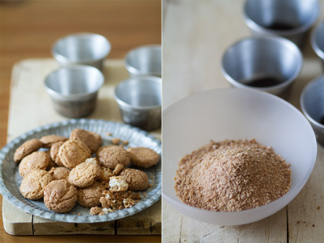
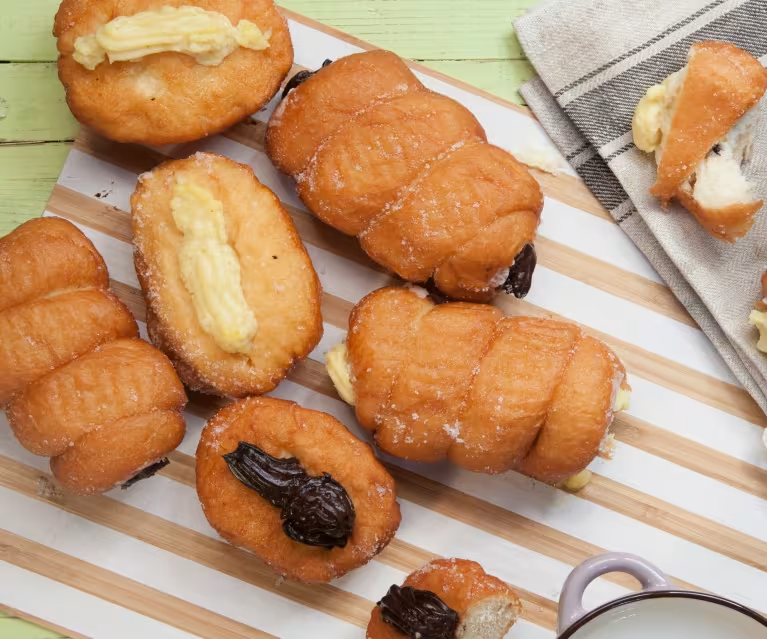

BONET
INGREDIENTES
- 1 taza de azúcar
- 2 huevos
- 1/2 taza de leche
Elaboracion
- Machacamos los amaretti en un mortero hasta obtener una harina fina. No pasa nada si nos
queda algún pedacillo más grande. Reservamos en un cuenco.

BONÈT
CREADOR DE ESTE BLOG DE POSTRES DONDE COMPARTO MI AMOR POR LA REPOSTERÍA CON EL MUNDO. AQUÍ
ENCONTRARÁS RECETAS LLENAS DE CREATIVIDAD. DESDE LOS CLÁSICOS QUE TODOS AMAMOS HASTA LA ÚLTIMA TENDENCIA EN
DULCES. .

CANNOLI
INGREDIENTES
- 1 huevo
- 250 g de harina de repostería
- 40 g de azúcar glas
- 1 cucharadita de cacao
- 40 g de manteca de cerdo
- Una pizca de sal
- 60 ml de vino Marsala
- ½ cucharadita de vinagre de vino blanco
- Aceite de oliva suave abundante para freír
- Pistacho en granillo para rematar
Elaboracion
- 1. Colocar la ricotta encima de un colador y dejar escurriendo todo lo que se pueda, plastando ligeramente de vez en cuando. Se puede dejar sobre el colador, filmada, en la nevera durante toda una noche para que quede la menor cantidad de suero posible. También se puede envolver en una tela de queso o estameña, apretando muy bien.
- 2. Cuando la ricotta ya esté bien seca, añadir el azúcar glas y batir con unas varillas de forma enérgica hasta que quede una crema sedosa. En este punto se pueden añadir los chips de chocolate o la fruta escarchada.
- 3. Meter la crema en una manga pastelera y dejar en la nevera al menos cinco horas.
- 4. Para preparar la masa, batir la manteca con unas varillas potentes junto con el azúcar y la sal, hasta que espume ligeramente. Añadir el huevo y seguir batiendo.
- 5. Mezclar la harina con el cacao e ir incorporando la mezcla a la anterior; añadir también poco a poco el vinagre y el vino. Trabajar hasta conseguir una masa que no se pegue demasiado, añadir un poco más de harina si fuese necesario, pero no puede ser mucha ya que la masa tiene que ser húmeda.
- 6. Cubrir la masa con papel film y dejar en la nevera durante una hora.
- 7. Estirar la masa hasta conseguir dos o tres milímetros de grosor, con la máquina de pasta o con el rodillo. Siempre espolvoreando un poco de harina por fuera.
- 8. Dividir las láminas de masa en cuadrados de 10x10 cm aproximadamente.
- 9. Enrollar los cuadrados en el molde para freír pegando dos esquinas, con las puntas hacia fuera (como un rombo). Para pegar las dos puntas utilizar un poco de huevo batido. Dejar reposar en la nevera 30 minutos.
- 10. Calentar abundante aceite en una sartén honda o en un cazo. Cuando esté bien caliente, freír los canutillos uno a uno. Cuando suflen ligeramente y se vean rígidos, no más de un minuto, retirar del aceite y pasar a un papel absorbente.
- 11. Es muy importante retirar el molde en ese momento, con mucho cuidado de no quemarnos: si esperamos mucho se quedará pegado y nos costará muchísimo quitarlo. En ese momento dejar enfriar completamente la masa.
- 12. A la hora de servir, rellenar con la crema y poner el granillo de pistacho en los bordes.
CANNOLI
CREADOR DE ESTE BLOG DE POSTRES DONDE COMPARTO MI AMOR POR LA REPOSTERÍA CON EL MUNDO. AQUÍ
ENCONTRARÁS RECETAS LLENAS DE CREATIVIDAD. DESDE LOS CLÁSICOS QUE TODOS AMAMOS HASTA LA ÚLTIMA TENDENCIA EN
DULCES. .

CARTOCCI
INGREDIENTES
- 500 gramos de harina
- 250 ml de agua tibia
- 10 gramos de levadura fresca o 5 gramos de levadura seca
- 1 cucharadita de sal
- 2 cucharadas de aceite de oliva
- Relleno de tu elección
- Aceite para freír
- Azúcar glas
Elaboracion
x
- 1. En un bol grande, disuelve la levadura en el agua tibia. Deja reposar durante unos minutos hasta que se active.
- 2. Añade la harina y la sal al bol con la levadura activada. Mezcla bien hasta obtener una masa homogénea.
- 3. Agrega el aceite de oliva y amasa la masa en una superficie ligeramente enharinada durante unos 10 minutos, o hasta que la masa sea suave y elástica.
- 4. Forma una bola con la masa y colócala en un bol engrasado. Cubre con un paño húmedo y deja reposar en un lugar cálido durante aproximadamente 1 hora, o hasta que la masa haya duplicado su tamaño.
- 5. Una vez que la masa haya levado, divídela en porciones pequeñas y estira cada porción en forma de círculo.
- 6. Coloca una cucharada del relleno de tu elección en el centro de cada círculo de masa.
- 7. Doble la masa sobre el relleno para formar un rollo y sella bien los bordes.
- 8. Calienta el aceite en una sartén grande a fuego medio-alto.
- 9. Fríe los Cartocci en el aceite caliente hasta que estén dorados y crujientes por ambos lados.
- 10. Retira los Cartocci del aceite y colócalos en papel absorbente para eliminar el exceso de grasa.

CARTOCCI
CREADOR DE ESTE BLOG DE POSTRES DONDE COMPARTO MI AMOR POR LA REPOSTERÍA CON EL MUNDO. AQUÍ
ENCONTRARÁS RECETAS LLENAS DE CREATIVIDAD. DESDE LOS CLÁSICOS QUE TODOS AMAMOS HASTA LA ÚLTIMA TENDENCIA EN
DULCES. .